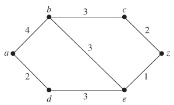
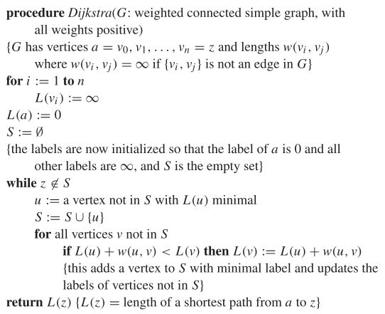
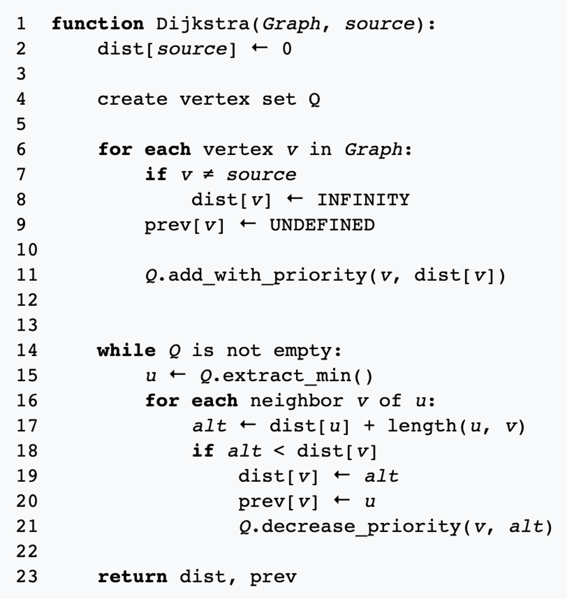
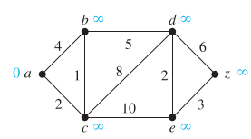

Algoritmo de Dijkstra#
¿Que es el algoritmo de Dijkstra?
El algoritmo de Dijkstra es uno de los métodos más importantes para hallar un camino de longitud mínima entre dos vértices de un grafo ponderado.
Fue descubierto por el matemático holandés Edsger Dijkstra en 1959.
Resuelve el problema de caminos mínimos en grafos ponderados no dirigidos cuando todos los pesos son positivos.
Puede adaptarse fácilmente para grafos dirigidos.
Ejemplo:
Longitud del camino más corto entre \(a\) y \(z\)

Aunque el camino más corto puede hallarse por simple inspección, desarrollaremos las ideas que nos servirán para entender el algoritmo de Dijkstra.
Resolveremos el problema hallando la longitud del camino mínimo de \(a\) a cada vértice sucesivo, hasta llegar a \(z\).
Paso a paso del algoritmo#
Iteración |
Acción principal |
Cálculo y actualización de distancias |
Conjunto ( S ) |
|---|---|---|---|
1 |
Inicio en ( a ) |
Se inicializan las distancias: |
( S = { a } ) |
2 |
Desde ( a ) |
Vecinos de ( a ): |
( S = { a, d } ) |
3 |
Desde ( d ) |
Vecinos de ( d ): |
( S = { a, d, b } ) |
4 |
Desde ( b ) |
Vecinos de ( b ): |
( S = { a, d, b, e } ) |
5 |
Desde ( e ) |
Vecinos de ( e ): |
( S = { a, d, b, e, z } ) |
6 |
Desde ( z ) |
Ya no hay nuevos vértices por visitar. |
( S = { a, d, b, e, z } ) |
Resultado final
El algoritmo determina las distancias más cortas desde \(a\) a todos los vértices. En particular, el camino más corto de \(a\) a \(z\) es:
Con un costo total mínimo:
¿Otra forma de encontrar el camino más corto?
Se podría obtener mediante fuerza bruta, examinando la longitud de cada posible camino de \(a\) a \(z\).
Sin embargo, este enfoque es impráctico incluso para las máquinas cuando hay un gran número de vértices o aristas.
Funcionamiento general del algoritmo de Dijkstra#
El algoritmo determina la longitud del camino mínimo desde un vértice inicial (por ejemplo \(a\)) hasta todos los demás vértices del grafo.
Pasos principales:
Inicializa todos los vértices con distancia infinita, excepto el vértice inicial (\(dist[a] = 0\)).
En cada iteración, selecciona el vértice no visitado con menor distancia.
Actualiza las distancias de sus vértices adyacentes si se encuentra un camino más corto.
Marca el vértice como visitado y repite el proceso hasta que todos los vértices estén procesados.
El algoritmo se basa en una serie de iteraciones con un conjunto distinguido de vértices y un proceso de etiquetado.
Idea del conjunto distinguido y etiquetas#
Se construye un conjunto de vértices visitados (S), agregando uno nuevo en cada iteración.
A cada vértice \(w\) se le asigna una etiqueta que representa la longitud del camino más corto desde \(a\) hasta \(w\), pasando solo por vértices de \(S\).
En cada paso, el vértice con etiqueta mínima se agrega al conjunto \(S\).
Pseudocódigo del algoritmo de Dijkstra#

Complejidad temporal#
El algoritmo de Dijkstra realiza \(O(n^2)\) operaciones (sumas y comparaciones) para determinar la longitud del camino más corto entre dos vértices de un grafo ponderado simple, conexo y no dirigido con \(n\) vértices.
Dijkstra con cola de prioridad#
Una implementación más eficiente utiliza una cola de prioridad (por ejemplo, un heap) y arreglos para las distancias y los vértices previos.

Seguimiento del algoritmo de Dijkstra#

En esta versión del algoritmo, en lugar de recorrer todos los vértices para encontrar el de menor distancia provisional, se utiliza una cola de prioridad (PQ). Esto permite extraer el vértice con menor distancia en tiempo eficiente \(O(log (V))\), reduciendo la complejidad total a \(O((V + E)log (V))\).
Paso |
Vértice actual ((u)) |
distancia |
previo |
Cola de prioridad (PQ) |
|---|---|---|---|---|
Inicio |
— |
{0, ∞, ∞, ∞, ∞, ∞} |
{nil, nil, nil, nil, nil, nil} |
{a, c, b, d, e, z} |
1 |
(a) |
{0, 4, 2, ∞, ∞, ∞} |
{nil, a, a, nil, nil, nil} |
{c, b, d, e, z} |
2 |
(c) |
{0, 3, 2, 10, 12, ∞} |
{nil, c, a, c, c, nil} |
{b, d, e, z} |
3 |
(b) |
{0, 3, 2, 8, 12, ∞} |
{nil, c, a, b, c, nil} |
{d, e, z} |
4 |
(d) |
{0, 3, 2, 8, 10, 14} |
{nil, c, a, b, d, d} |
{e, z} |
5 |
(e) |
{0, 3, 2, 8, 10, 13} |
{nil, c, a, b, d, e} |
{z} |
6 |
(z) |
{0, 3, 2, 8, 10, 13} |
{nil, c, a, b, d, e} |
{ } |
Interpretación
La columna
distanciamuestra los valores actuales del vector de distancias desde (a).La columna
previoindica el vértice anterior en el camino más corto.La cola de prioridad (PQ) contiene los vértices no visitados, ordenados por su distancia provisional mínima.
Resultado final
El camino más corto de \(a\) a \(z\) encontrado por Dijkstra con cola de prioridad es:
Con un costo total de:
Esta implementación con cola de prioridad mejora el rendimiento del algoritmo, especialmente en grafos grandes o dispersos, comparado con la versión que usa simples arreglos.